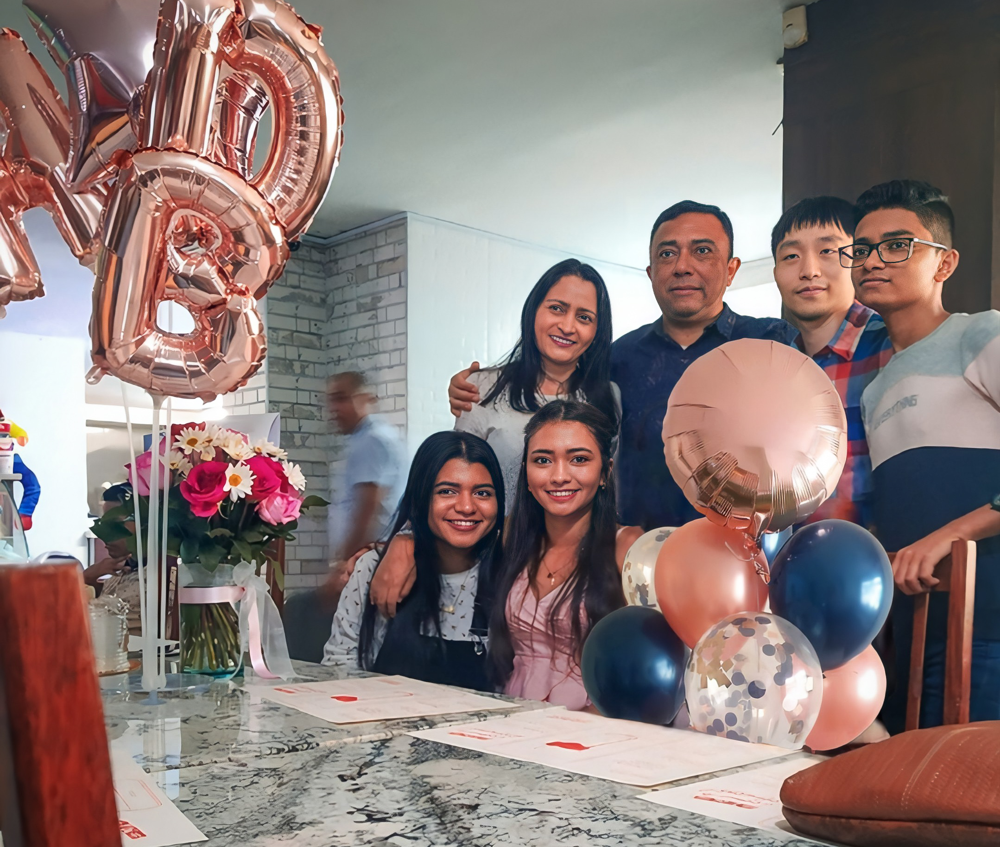

To:
Subject:
From:
Send
Attach
Dear dany __The news that you chose my country for your exchange made me very happy. My name is Hefzi Montaño, I am 21 years old and I live with my parents, my sister and my brother. We are all excited to meet you. My family and I didn't know much about New Zealand so we were reading about it and learning how to cook typical foods like Hogget Roast, Whitebait Fritter and Pavlova Pie. We are going to cook New Zealand meals to make you feel at home. There are some things you should know about Barranquilla. First of all, the weather is very hot so you should only bring summer clothes and bathing suits. In Barranquilla you can make friends very easily because they are all very outgoing and open towards other people. We can travel to many places such as La Ventana del Mundo, El Malecón del Rio, El Castillo de Salgar, El Museo del Caribe, and join us to enjoy the Barranquilla Carnival. I hope you enjoy your stay in Barranquilla very much and take very good memories back to your country. This's pic of my parents Alberto and Liliana, my siblings Camila and Esteban and my boyfriend Seungwan. Regards, Hefzi
